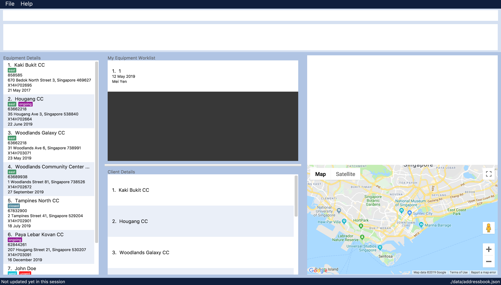

By: Team W10-3 Since: JAN 2019 Licence: MIT
- 1. Introduction
- 2. Quick Start
- 3. Features
- 3.1. Viewing help :
help - 3.2. Adding an equipment:
add-e - 3.3. Creating a new worklist:
add-w - 3.4. Adding to work list:
put - 3.5. Editing an equipment:
edit-e - 3.6. List all equipments:
list-e - 3.7. View work list:
list-w - 3.8. View equipment details:
view-e - 3.9. Selecting an equipment or work list:
select - 3.10. Locating equipment by location:
find - 3.11. Show in map:
display - 3.12. Sort the list:
sort - 3.13. Filtering the list:
filter - 3.14. Autocomplete: tab
- 3.15. Deleting equipment:
delete-e - 3.16. Deleting work list:
delete-w - 3.17. Enabling notification:
notify - 3.18. Route planning:
route - 3.19. Listing entered commands:
history - 3.20. Undoing previous command:
undo - 3.21. Redoing all the previously undone command:
redo - 3.22. Clearing all entries:
clear - 3.23. Exit the program:
exit - 3.24. Saving the data
- 3.25. Encrypting data files
[coming in v2.0]
- 3.1. Viewing help :
- 4. FAQ
- 5. Command Summary
1. Introduction
Equipment Manager is a desktop CLI (Command Line Interface) application that allows engineers to keep track on the Preventive Maintenance schedule of all Resuscitation Devices in singapore. It has a GUI (Graphic User Interface) that allows users to get further information on each equipment.
Our purpose is to help engineers plan the number of equipment that they would like to carry out preventive maintenance and keep track on each equipment details such as status, location and more information.
Interested? Jump to the Section 2, “Quick Start” to get started. If you already have Equipment Manager up and running, then head over to Section 3, “Features”. Enjoy!
2. Quick Start
-
Ensure you have Java version
9or later installed in your Computer. -
Download the latest
addressbook.jarhere. -
Copy the file to the folder you want to use as the home folder for your Address Book.
-
Double-click the file to start the app. The GUI should appear in a few seconds.
 -
Type the command in the command box and press Enter to execute it.
e.g. typinghelpand pressing Enter will open the help window. -
Some example commands you can try:
-
list: lists all contacts -
addn/John Doe p/98765432 e/johnd@example.com a/John street, block 123, #01-01: adds a contact namedJohn Doeto the Address Book. -
delete3: deletes the 3rd contact shown in the current list -
exit: exits the app
-
-
Refer to Section 3, “Features” for details of each command.
3. Features
Command Format
-
Words in
UPPER_CASEare the parameters to be supplied by the user e.g. inadd n/NAME,NAMEis a parameter which can be used asadd n/John Doe. -
Items in square brackets are optional e.g
n/NAME [t/TAG]can be used asn/John Doe t/urgentor asn/John Doe. -
Items with
… after them can be used multiple times including zero times e.g.[t/TAG]…can be used ast/friend,t/friend t/familyetc. -
Parameters can be in any order e.g. if the command specifies
n/NAME p/PHONE_NUMBER,p/PHONE_NUMBER n/NAMEis also acceptable.
3.1. Viewing help : help
Format: help
3.2. Adding an equipment: add-e
Adds an equipment to the Equipment Manager
Format: add-e /[field name][field value]
| The user can enter multiple field name and values. |
Example:
-
add equipment /name AED /clientid 1729 /year 2019 /status in-use
3.3. Creating a new worklist: add-w
Create a worklist in the Equipment Manager by giving the worklist an ID
Format: `add-w /[worklist value] `
| The user can enter multiple field name and values. |
Example:
-
add-w /date 2019-02-12 /assignee Mei Yen
3.4. Adding to work list: put
Adds equipment to working list in the Equipment Manager
Format: put [equipment id] [worklist id]
| The user can enter multiple field name and values. |
Example:
-
put 17291 203
3.5. Editing an equipment: edit-e
Edits an existing person in the address book.
Format: edit INDEX [n/NAME] [p/PHONE] [e/EMAIL] [a/ADDRESS] [t/TAG]…
-
Edits the person at the specified INDEX. The index refers to the index number shown in the displayed person list. The index must be a positive integer 1, 2, 3, …
-
At least one of the optional fields must be provided.
-
Existing values will be updated to the input values.
-
When editing tags, the existing tags of the person will be removed i.e adding of tags is not cumulative.
-
You can remove all the person’s tags by typing t/ without specifying any tags after it.
Examples:
-
edit 1 p/91234567 e/johndoe@example.com
Edits the phone number and email address of the 1st person to be 91234567 and johndoe@example.com respectively. -
edit 2 n/Betsy Crower t/
Edits the name of the 2nd person to be Betsy Crower and clears all existing tags.
3.6. List all equipments: list-e
Shows a list of all equipments in the Equipment Manager
Format: list-e
Example:
-
list equipment
3.7. View work list: list-w
Shows a list of all clients in the Equipment Manager
Format: list-w
3.8. View equipment details: view-e
View and retrieve more information on the equipment
Format: view-e /[equipment name]
Example:
-
view equipment 12839
3.9. Selecting an equipment or work list: select
Selects the equipment or work list identified by the index number used in the displayed equipment list or displayed work list. The address of the equipment will be shown as marker on the map.
Format: select INDEX
-
Selects the equipment and loads the equipment at the specified INDEX.
-
The index refers to the index number shown in the displayed equipment list.
-
The index must be a positive integer 1, 2, 3, …
Examples:
-
list-e
select 2
Selects the 2nd equipment in the equipment manager. -
list-w
select 1
Selects the 1st worklist in the equipment manager. -
find Betsy
select 1
Selects the 1st equipment in the results of the find command.
3.10. Locating equipment by location: find
Finds equipment whose location contain any of the given keywords.
Format: find KEYWORD [MORE_KEYWORDS]
Examples:
-
find Clementi
ReturnsClementi Police StationandClementi CC
3.11. Show in map: display
Display entries on the list to the map. Addresses of the equipment will be taken to plot marker on map.
Format: display
Example:
-
display
3.12. Sort the list: sort
Sort the current shown list.
Format: sort /[fieldname to be sorted by] [/desc or /asc]
The user can sort the current shown list with any fields, and can sort by multiple fields.
| Equipment, client, and worklist can all be sorted, by any fields of them. |
Example:
-
sort /region /desc /id /asc
3.13. Filtering the list: filter
Filter the current shown list.
Format: filter /[fieldname to be filtered with] [value or value range of the field]
-
The user can filter the current shown list with any fields, and can filter by multiple fields.
-
Equipment, client, and worklist can all be filtered, by any fields of them.
Example:
-
filter /region north /type HDB /status spoiled -
filter /year 1987-2018 /status in-use
3.14. Autocomplete: tab
If you have forgotten how to type a command, do not worry! By typing in the first letter of the command in the command and pressing the tab key, it will display the full format of the command.
3.15. Deleting equipment: delete-e
Deletes the specified equipment from the equipment list and the whole details contained under the equipment specified by its equipment name /[equipment id]
Format: delete equipment EQUIPMENT_ID
Example:
-
delete equipment 38120
3.16. Deleting work list: delete-w
Deletes the specified work list from the work list. Format: delete worklist /[worklist id]
Example:
* delete worklist 12
3.17. Enabling notification: notify
Notifies you when an equipment is due for preventive maintenance in 2 days. You can choose to get notifications or not.
3.18. Route planning: route
With multiple destinations that you plan to visit for preventive maintenance, using the route command can return you with the following details:
Format: route /[worklist id]
3.19. Listing entered commands: history
Lists all the commands that you have entered in reverse chronological order.
|
Pressing the ↑ and ↓ arrows will display the previous and next input respectively in the command box. |
3.20. Undoing previous command: undo
Restores Equipment Manager to the state before the previous undoable command was executed.
|
Undoable commands: those commands that modify the address book’s content ( |
Examples:
-
delete 1
list
undo(reverses thedelete 1command) -
select 1
list
undo
Theundocommand fails as there are no undoable commands executed previously. -
delete 1
clear
undo(reverses theclearcommand)
undo(reverses thedelete 1command)
3.21. Redoing all the previously undone command: redo
Reverses the most recent undo command.
Format: redo
Examples:
-
delete 1
undo(reverses thedelete 1command)
redo(reapplies thedelete 1command) -
delete 1
redo
Theredocommand fails as there are noundocommands executed previously. -
delete 1
clear
undo(reverses theclearcommand)
undo(reverses thedelete 1command)
redo(reapplies thedelete 1command)
redo(reapplies theclearcommand)
3.22. Clearing all entries: clear
If you want to clear out all the client or equipment details in Equipment Manager, you can use the clear command. For example, clear all clients or clear all equipment.
Format: clear
3.23. Exit the program: exit
When you are done with Equipment Manager, type exit command to exit the application. You can also click on the close button above the menu bar to exit
Format: exit
3.24. Saving the data
Equipment Manager data are saved in the hard disk automatically after any command that changes the data.
There is no need to save manually.
3.25. Encrypting data files [coming in v2.0]
{explain how the user can enable/disable data encryption}
4. FAQ
Q: How do I transfer my data to another Computer?
A: Install the app in the other computer and overwrite the empty data file it creates with the file that contains the data of your previous Equipment Manager folder.
5. Command Summary
-
[in-progress]